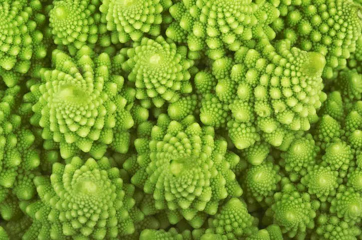

| Un esempio di frattale nel Broccolo Romanesco |
|---|
|  |
I frattali che possiamo trovare in natura sono proprio come quelli matematici, una stessa struttura ripetuta su diverse scale, con l’unica differenza che non sono infiniti. I frattali sono presenti in moltissimi posti e ci dimostrano che il nostro mondo non è captico quanto pensiamo.
L’esempio più celebre è probabilmente il fiocco di neve, ma i frattali si trovano anche nelle piante come i girasoli, i broccoli, gli
abeti e le venature di una foglia. Ci sono esempi anche nel corpo umano, come gli alveoli polmonari e i vasi sanguigni.
Ci sono vari motivi, come la composizione chimica che permette ai fiocchi di neve e ad alcuni metalli di creare certe strutture.
Gli scienziati hanno ipotizzato alcune motivazioni per la presenza di frattali negli esseri viventi:
-Efficienza: Ad esempio gli alveoli polmonari e le venature di una foglia presentano una struttura frattale che permette il massimo scambio di sostanze
-Semplificazione: A livello genetico è più conveniente avere una struttura sempre uguale da replicare più che avere dati per ogni dettaglio. Ad esempio negli abeti ogni diramazione è simile all’intero albero.